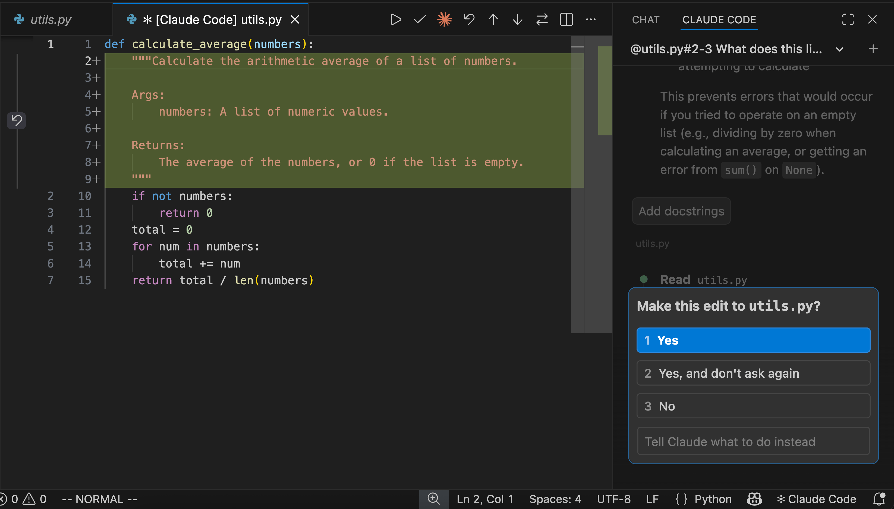
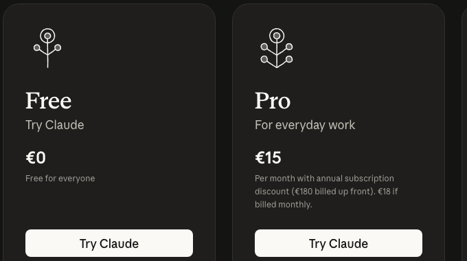
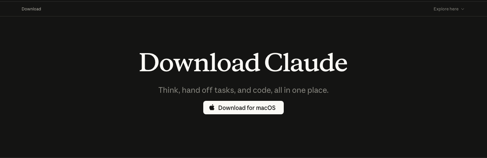
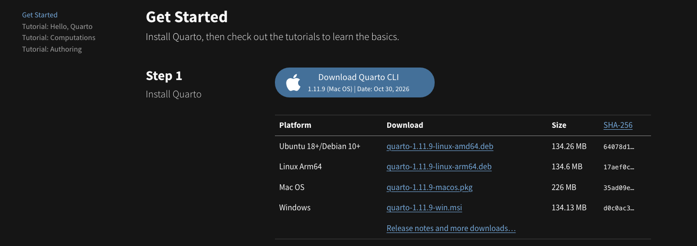
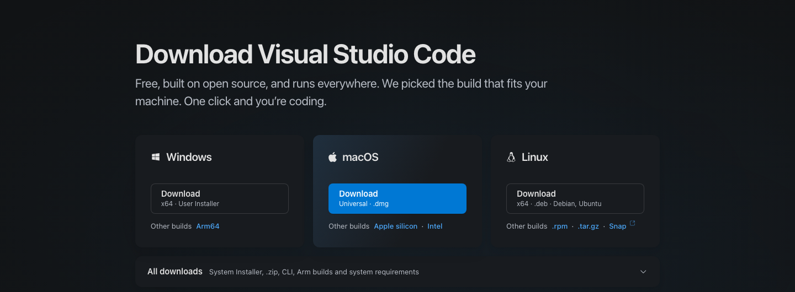
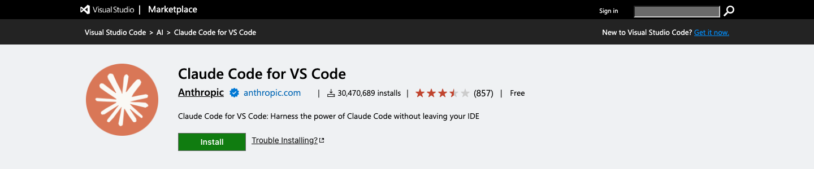
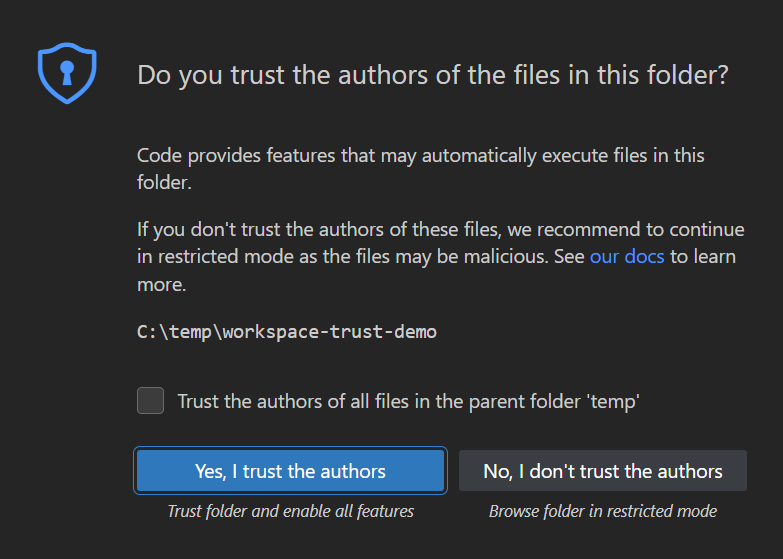
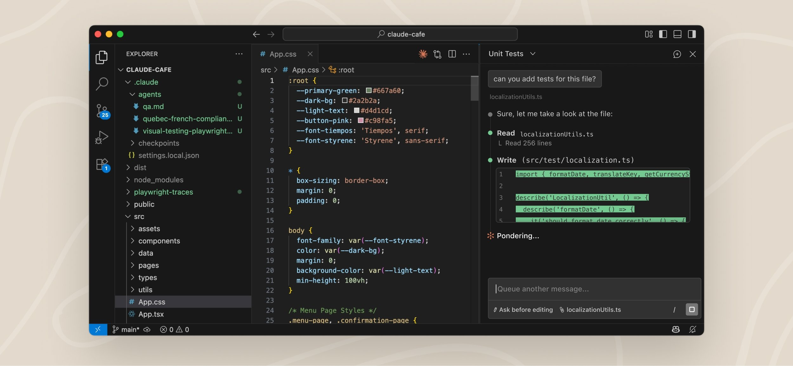

Responsible use of AI · Agentic AI for PhD students · School of Business and Economics
Tuesday 15 December 2026
| Time | Block |
|---|---|
| 13:00–13:55 | 1 · Getting started: models, effort, modes; read a paper and reproduce its main table |
| 13:55–14:50 | 2 · Customization: CLAUDE.md, permissions, skills, hooks |
| 14:50–15:05 | Break |
| 15:05–16:00 | 3 · Agentic coding: delegation, subagents, testing your checks |
| 16:00–16:55 | 4 · Optimal usage: context, cost, integrity, writing; a complete research configuration |
| 16:55–17:00 | Questions, feedback |
Slides marked at home or reference are for after the course: the take-home continues the same project.
Each block builds on the previous one. By the end of Block 4 you will be able to read, adopt and adapt a full research configuration for Claude Code.
Producing code is now fast and cheap. Checking it is the slow part.
What remains your job:
Today’s four blocks practise these three tasks.
Everything we do today can also be done with other agentic AI tools: OpenAI Codex, Google’s Gemini CLI, GitHub Copilot’s agent mode, Cursor. We use Claude Code as the demonstration tool.
| What you learn today | In Claude Code | In other tools |
|---|---|---|
| a written memory of the project | CLAUDE.md |
AGENTS.md (Codex and others; Claude Code also reads it) |
| plan before acting | plan mode | planning, read-only or approval modes |
| limits on what the agent may do | allow/deny rules, sandbox | approval and sandbox settings |
| reusable procedures | skills | skills, custom prompts, rules |
| independent review | subagents | subagents, or a second session or model |
What carries over is the method: a written research design, a plan you review, checks that run, reviewers you have tested. The commands and file names differ.
┌──────────────────────────────────────────┐
your goal ─▶ 1. gather context (read files, search) │
│ 2. take action (edit, run a command) │
│ 3. verify (read output, run checks) │
└──────────────┬───────────────────────────┘
│ not done? repeat
▼
report back to youThe model decides each step. You can stop it at any time (Esc) and redirect it.
Anthropic describes Claude Code in the same three phases: gather context, take action, verify results.
Does well
Fails in ways that are hard to see
None of the failures on the right produces an error message.
You did the set-up before the course (setup page on the course website). Check now:
ck-project (File → Open Folder…)Not working? Raise your hand; work with your neighbour meanwhile. The set-up steps are at the end of this deck (reference).

Before an edit, VS Code shows the old and the new version side by side; you accept or reject.
| You want to | Do |
|---|---|
| Reject a proposed edit | click Reject (or No) in the edit prompt |
| Undo what Claude did since a message | hover over that message → Rewind code to here |
| Go back further | type /rewind and choose the point |
| Be safe before a big task | make a copy of the folder (or, if you use git, commit) |
Rewind covers the files Claude edited with its own tools. Files changed by scripts that Claude ran (e.g. output an R script wrote) are not restored: rerun the script.
Slash commands you will use today
| Command | What it does |
|---|---|
/model |
choose the model |
/effort |
choose the effort level |
/plan |
switch to plan mode |
/context |
show how full the context window is |
/clear |
start a new conversation (memory files are read again) |
/rewind |
go back to an earlier point, for code, conversation or both |
/usage |
tokens and plan limits used |
/btw <question> |
side question that does not enter the conversation |
/doctor |
diagnose configuration problems |
Type them in the Claude input box. Interrupt Claude at any time with Esc.
| Alias | Model | Character | Use for |
|---|---|---|---|
fable |
Fable 5.2 | strongest; investigates before acting, checks its own work; costs a multiple of Opus | large, multi-hour tasks where Opus falls short |
opus |
Opus 5.5 | default on all plans; strong reasoning | most research work |
sonnet |
Sonnet 5.5 | fast, cheaper | bounded tasks: fix these errors, write this table |
haiku |
Haiku 5.5 | fastest, cheapest | mechanical work: rename, reformat, search |
Special alias: opusplan uses Opus in plan mode and Sonnet for execution.
All current models have a 1M-token context window.
Switch: /model, or click the model name under the prompt box (VS Code), or claude --model sonnet.
| Level | Use for |
|---|---|
low |
mechanical steps: rename, reformat, find a file |
medium |
default for current models; most drafting, coding and analysis |
high |
checks where a wrong “looks fine” is costly: reviewing an estimation script, checking claims |
xhigh |
hard problems: a long debugging session, a large refactor |
max |
only when you have seen xhigh fall short |
Set it with /effort high (no argument opens a slider), --effort, or effortLevel in settings.
ultrathink in a prompt runs that one turn at xhigh. Phrases such as “think hard” are ordinary text and change nothing.
Higher effort costs more tokens and takes longer.
| Mode | Claude may, without asking | Use when |
|---|---|---|
Manual (default) |
read files | you want to approve every edit and command |
Edit automatically (acceptEdits) |
read and edit files | you trust the edits and review the diff afterwards |
Plan (plan) |
read and search; write only the plan | before any non-trivial task; our default |
Auto (auto) |
most actions; a classifier reviews risky ones | executing an approved plan |
Bypass (bypassPermissions) |
everything | only in a throw-away environment; must be enabled explicitly |
Switch: the mode indicator in VS Code, Shift+Tab in the terminal, or /plan.
Allow and deny rules (Block 2) apply in every mode.
The most common failure is solving the wrong problem, not writing bad code.
In plan mode Claude reads your files and proposes what it will do, before any file is changed. The plan shows the research decisions:
Correcting a decision in a plan costs a sentence. The same decision buried in code is easy to miss.
plan mode review approve check
──────────▶ plan ──────────▶ comments ──────────▶ Claude ──────────▶ you
Claude reads, you read it, choose the mode runs and read the changes,
proposes comment inline for execution reports verify numbersAnthropic’s recommended sequence: explore → plan → code → commit (the last step if you use git).
When you approve a plan you choose how execution runs (manual review of edits, or auto). Approving a plan does not restrict what Claude may do afterwards; your permission rules do.
| Weak | Better |
|---|---|
| “Summarise the paper.” | “Summarise paper/njmin-aer.pdf in five bullet points: question, data, identification, main result with its table number, main caveat. Quote the sentence that states the main result.” |
| “Load the data.” | “Read data/raw/public.dat using the column definitions in data/raw/codebook. Report the number of stores per state and compare with the paper.” |
| “Replicate the paper.” | “Reproduce rows 1, 2 and 4 of Table 3. Save to output/table3.csv. Put the published numbers next to yours.” |
Give context (files, design), the goal, and how you will check the result.
Card and Krueger (1994): New Jersey raised its minimum wage in April 1992; Pennsylvania did not. They surveyed fast-food restaurants in both states before and after.
By the end of the day you have, in the folder ck-project:
| Deliverable | Block |
|---|---|
| The paper and its data, organised, and a summary you have checked | 1 |
| A replication of the paper’s Table 3 in R | 1 and 3 |
| A short literature review on minimum wages and employment, with verified citations | 2–4 |
| A few slides presenting both | 4 |
The same tasks you will do for every paper you build on. Students who have their own paper with a public replication package may use it instead.
In plan mode, in the folder ck-project:
Download the paper from https://davidcard.berkeley.edu/papers/njmin-aer.pdf into paper/, and the data from https://davidcard.berkeley.edu/data_sets/njmin.zip into data/raw/ and unzip it. Then list what is in data/raw/ and explain what each file is.
Read the plan: which commands will it run? Approve. Then check:
Summarise paper/njmin-aer.pdf in five bullet points: research question, data, identification strategy, main result with its table number, and the main caveat the authors discuss. For each bullet, quote the sentence in the paper it is based on.
Check every bullet against the quoted sentence in the PDF. Then ask:
What would have to be true for the comparison between New Jersey and Pennsylvania to identify the effect of the minimum wage?
Is the answer a fair statement of the identifying assumption? Is anything in the summary not in the paper?
Read data/raw/public.dat using the column definitions in data/raw/codebook, in R or Python, whichever is installed (code in R/ or python/; report stores per state). Then reproduce rows 1, 2 and 4 of Table 3, columns (i) to (iii): mean full-time-equivalent employment per store by state, before and after, and the change in the balanced sample, with standard errors. Use the paper’s definition of FTE. Save to output/table3.csv with the published numbers in a second column.
Check: 410 stores, 331 in New Jersey and 79 in Pennsylvania? Then against the PDF (page 780):
R/01_read.R yourself once: open it and click Run (R extension), or ask Claude to run it and show the outputList the files you created or changed in this conversation, and for each number in output/ the script and line that produced it.
If Claude did something you do not want: hover over the message before it → Rewind code to here. Git users: commit now.
Here we have a published table to compare with. For your own analysis you will not; Blocks 3 and 4 are about what to do then.
medium by default; raise for checks, lower for mechanical workNext block: Claude starts every session without memory of the last one. We give it a memory.
| Kind | Example | What it can do with your project |
|---|---|---|
| Chat | claude.ai, ChatGPT | Text in, text out. You copy code back and forth. It never sees your files. |
| Autocomplete | Copilot-style suggestions in an editor | Completes the line or function you are writing. |
| Agent | Claude Code | Reads your files, runs R/Stata/Python, edits scripts, reads the output, repeats until done. |
Korinek (2023, JEL) maps the use of language models in economic research: ideation, writing, background research, coding, data analysis, mathematical derivations. Agents move the coding and data analysis items from “suggest” to “do”.
A program that runs on your computer and gives a Claude model tools:
| Tool | What it does |
|---|---|
| Read, Grep, Glob | read files, search their content, find files |
| Edit, Write | change files, create files |
| Bash | run commands: Rscript, stata-mp -b, python, git, quarto |
| WebSearch, WebFetch | search the web, read pages |
| Agent | start a sub-agent with its own context (Block 3) |
Available as a terminal program (CLI), a VS Code extension, JetBrains plugin, desktop app and web app. Same engine, different windows. We use VS Code.
During a session the model sees only:
CLAUDE.md, Block 2)It does not know your research design, your data documentation, or what you decided last week, unless that is written in a file it reads.
Long sessions fill the window and quality drops. We return to this in Block 4.
A smaller model at higher effort can be cheaper than a larger one and as good for a bounded task. Try it on your own work.
/fast switches to a faster version of the same model: up to 2.5× faster, at a higher price per token. On subscription plans it uses extra usage credits.
Useful when you are waiting on many short interactive steps. Not needed today.
| Item | Notes |
|---|---|
| A paid Claude plan, or a similar agentic AI tool | Claude Pro or higher (the free plan does not include Claude Code); or e.g. OpenAI’s Codex |
| VS Code | free, from Microsoft |
| R, Python or Stata | optional: Claude uses whatever is installed for the replication |
| Quarto | from quarto.org, plus the Quarto extension in VS Code (Block 4) |
| A recent laptop | macOS 13+, Windows 10 or later, or a recent Linux |
No command line is needed for any of the steps that follow. Everything is done by clicking.
The Free plan does not include Claude Code.
Alternatively: a similar agentic AI tool, e.g. OpenAI’s Codex (paid ChatGPT plan, also as a VS Code extension).


claude.com/download: the desktop app for macOS and Windows. It includes chat and a Code tab that runs Claude Code on a folder.
We work in VS Code today. The app is a fallback if VS Code does not work on your laptop.
quarto.org/docs/get-started: download Quarto for your system and run the installer. We use it for the review and the slides.
No programming language is required. If you already use R, Python or Stata, keep it: Claude uses what is on your laptop.


code.visualstudio.com/download: click the button for your system and run the installer. macOS: drag Visual Studio Code into Applications. Windows: accept the defaults.

Option A: open the Marketplace page and click Install; your browser asks to open VS Code; allow it.
Option B: inside VS Code (next slide).
Check the publisher: Anthropic, with the blue check mark.
Search Quarto in the Extensions view (publisher Quarto) and click Install.
If you use R, also install the R extension by REditorSupport.
VS Code works on folders. Claude can see everything in the folder you open, and nothing outside it.
ck-project and click OpenOnly trust folders whose content you know.

If you get an answer, the set-up works.

From now on, every new Claude conversation starts in plan mode: Claude reads and proposes a plan, and changes nothing until you approve.
Without this setting, new conversations start in auto mode.
If you already use git: commit before each task and review changes with Source Control in VS Code. Git records every version of every file, across sessions. It is not needed for this course.
| Feature | How |
|---|---|
| Open Claude | orange Claude icon (editor toolbar), status bar Claude Code, or Command Palette → “Claude Code: Open in New Tab” |
| Refer to a file | type @ and the file name, e.g. @paper/njmin-aer.pdf |
| Refer to selected lines | select code, press Option+K (Mac) / Alt+K → inserts @file.R#5-10 |
| Review edits | side-by-side diff, accept or reject each change |
| Review a plan | the plan opens as a document; add comments before approving |
| Undo | hover a message → Rewind code to here / Fork conversation from here |
| Several conversations | “Open in New Tab”; Session history to resume an old one |
| Model, mode | click the model name or the mode indicator below the input box |
| Problem | Try |
|---|---|
| Sign-in keeps reappearing | close and reopen VS Code; sign out and in again in the Claude panel |
| No Claude icon after installing | Command Palette (Cmd/Ctrl+Shift+P) → “Claude Code: Open in New Tab” |
Claude cannot find Rscript |
tell Claude where R is installed; on Windows, reinstall R with “add to PATH” |
| The extension does not work at all | use the Claude desktop app (Step 1b), Code tab, on the same folder |
| Anything else | ask your neighbour, then the TA |
Claude Code also runs in a terminal. Not needed today; useful later for servers, scripts and keyboard-only work.
# install: macOS, Linux, WSL
curl -fsSL https://claude.ai/install.sh | bash
# install: Windows PowerShell
irm https://claude.ai/install.ps1 | iex
claude --version # check
claude doctor # check installation and settings
claude # start in the current folder
claude --permission-mode plan # start in plan mode
claude update # update nowPlan mode as default for a project in the terminal: .claude/settings.json with { "permissions": { "defaultMode": "plan" } }. In VS Code, open the terminal with Ctrl+` and type claude. Shift+Tab cycles modes.
/powerup for interactive lessonsResponsible use of AI · SBE PhD course